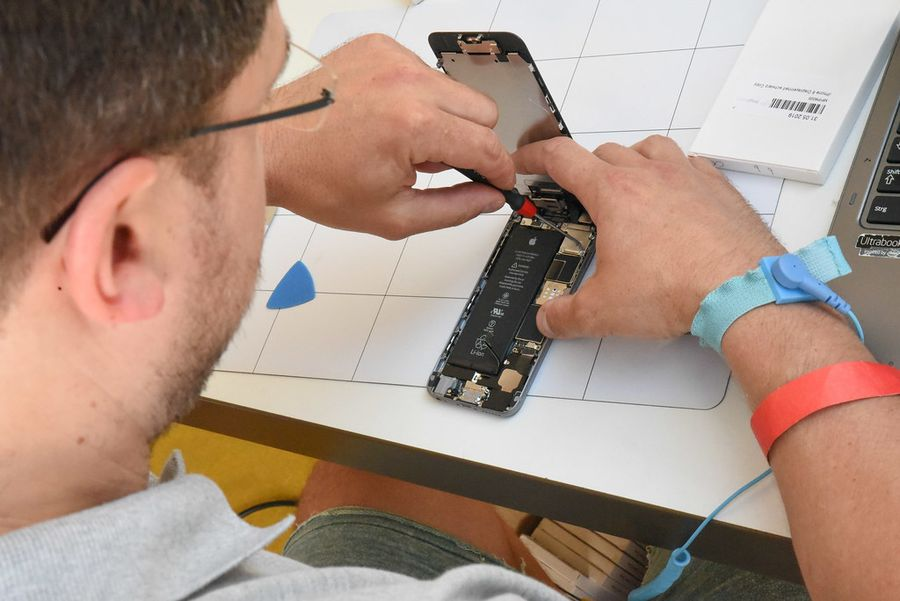
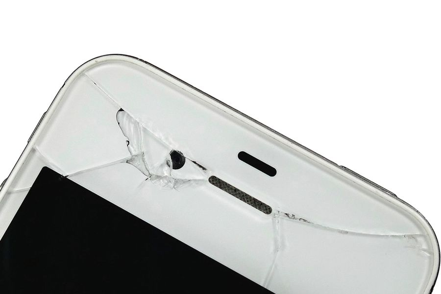
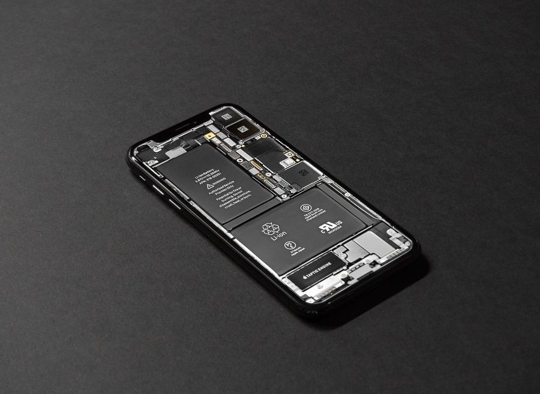

Ana sayfaTelefonlar
Telefon ve elektronik
Akıllı telefon, küçük elektronik ve telefon tamiri. Modeller ve stok sık değiştiği için burada ürün listesi tutmuyoruz; aradığınız modeli yazın, elimizde olanı söyleyelim. Bu sayfada doğru telefonu seçmenize ve telefonunuzu tanımanıza yardım edecek araçlar var.
Telefon seçme pusulası
Sizin için önemli olanları işaretleyin; her biri için teknik özelliklerde neye bakmanız gerektiğini gösterelim. İsterseniz önceliklerinizi bize de yazın, elimizdeki seçenekleri söyleyelim.
Mesaj önizlemesi
Merhaba Ayasofya Teknoloji, Telefon bakıyorum. Elinizdeki seçenekler hakkında bilgi alabilir miyim?
Hiçbir şey seçmediğinizde tüm başlıklar görünür; seçtikçe yalnız sizin için önemli olanlar kalır.
Kamera
Megapiksel sayısı tek başına çok şey söylemez. Ana sensörün boyutuna, optik görüntü sabitlemeye (OIS) ve gece çekimi örneklerine bakın. Yakınlaştırmayı sık kullanıyorsanız optik yakınlaştırmalı ikinci kamera fark yaratır.
Uzun pil ömrü
Kapasite (mAh) önemlidir ama tek ölçü değildir; işlemcinin verimliliği, ekran boyutu ve yenileme hızı da pil süresini belirler. Bağımsız incelemelerdeki ekran süresi testleri iyi bir karşılaştırma verir.
Oyun ve hız
İşlemci sınıfına, RAM miktarına ve ekran yenileme hızına bakın; 90–120 Hz ekranlar kaydırırken ve oyunda daha akıcı görünür. Uzun oyunlarda ısınma ve performans düşüşü de incelemelerde ölçülür.
Bol depolama
Hafıza kartı yuvası olmayan telefonlarda depolama sonradan artırılamaz. Aşağıdaki hesaplayıcıyla ihtiyacınızı görün; bir üst kapasite telefonu daha uzun süre rahat kullandırır.
Büyük ekran
Ekran ölçüsü inç cinsinden verilir. OLED panellerde siyahlar daha derin görünür; güneş altında okunabilirlik için en yüksek parlaklık (nit) değerine bakın.
Tek elle kullanım
Yaklaşık 6,1 inç ve altı ekranlar tek elle daha rahat kullanılır. Ağırlık (gram) ve kalınlık değerlerini de karşılaştırın; kılıf takınca telefon biraz daha büyür.
Dayanıklılık
IP67 ve IP68 sınıfları toza ve suya karşı dayanıklılığı gösterir; ölçüm laboratuvar koşullarında yapılır, sıvı temasında yine dikkatli olun. Sağlam bir kılıf ve ekran koruyucu en az bu sınıflar kadar önemlidir.
Uzun yazılım desteği
Üreticinin bu model için ne kadar süre sistem ve güvenlik güncellemesi vereceğini açıkladığı sayfaya bakın. Güncelleme alan telefon hem güvende kalır hem yeni uygulamalarla uyumlu olur.
Kaç GB depolama yeter?
Telefon alırken en çok pişman olunan konu depolama. Kullanımınızı kabaca girin, yaklaşık ihtiyacınızı görün.
- Fotoğraf
Bir fotoğraf çekim ayarına göre yaklaşık 2–5 MB yer kaplar; hesapta ortalama 3 MB alınır.
- Video
1080p video dakika başına yaklaşık 60–130 MB, 4K video dakika başına yaklaşık 170–400 MB tutar. Hesapta 100 MB ve 300 MB alınır.
- Sistem payı
İşletim sistemi ve ön yüklü uygulamalar baştan yer kaplar; hesaba 15 GB eklenir.
- Boş alan payı
Telefon dolmaya yaklaştıkça yavaşlar ve güncelleme yapamaz. Önerilen kapasite, toplamın üstüne üçte bir kadar pay bırakır.
Depolama hesaplayıcı
- Sistem
- Fotoğraf
- 1080p
- 4K
- Uygulama
- Mesaj
- İndirme
- 64 GB
- 128 GB
- 256 GB
- 512 GB
- 1 TB
Önerilen kapasite: en az 64 GB.
Merhaba Ayasofya Teknoloji, Depolaması yeterli bir telefon bakıyorum.
Telefon alırken kontrol listesi
Yeni ya da ikinci el, telefonu teslim alırken birkaç dakika ayırın. İşaretledikçe devre ilerler; listeyi telefonunuzda açıp dükkânda da kullanabilirsiniz.
IMEI nedir? Her telefona özel 15 haneli kimlik numarasıdır. Tuş ekranına *#06# yazınca görünür; kutudaki ve faturadaki numarayla aynı olmalıdır. Kayıt durumunu e-Devlet'teki IMEI sorgulama hizmetinden görebilirsiniz.
Tamir masası
Telefon onarımı yaptığımız işler arasında. Süre ve parça durumu arızaya göre değişir; modeli ve belirtiyi yazın, bilgi verelim.
- Ekran değişimi
Kırık cam, çizgili ya da kararan görüntü, tepki vermeyen dokunmatik.
- Batarya değişimi
Çabuk biten, birden kapanan, ısınan ya da şişen batarya.
- Şarj soketi
Şarj olmama, temassızlık, kablonun gevşek oturması.
- Kamera ve hoparlör
Bulanık çekim, odaklamama, cızırtılı ya da kısık ses.
- Yazılım ve yedekleme
Güncelleme sonrası sorunlar, açılışta takılma, veri yedeği.
- Tamirden sonra koruma
Telefonunuz için uygun kılıf ve ekran koruyucuyu da aynı yerde sorabilirsiniz.

Tamire getirmeden önce
Yedek alın
Fotoğraf, rehber ve mesajları buluta ya da bilgisayara yedekleyin.
Kilit kodunu hatırlayın
Tamirden sonra denemek için ekran kilidi gerekebilir; kodunuzu bilin.
Kartları çıkarın
SIM kartı ve varsa hafıza kartını çıkarıp yanınızda tutun.
Belirtiyi not edin
Ne zaman başladı, düştü mü, ıslandı mı? Kısa bir not işi hızlandırır.
Arıza belirtisi rehberi
Belirtiyi seçin: kendi başınıza güvenle deneyebilecekleriniz, dikkat etmeniz gerekenler ve dükkânda neye bakılacağı. Sonra modelinizle birlikte bize yazın.
Mesaj önizlemesi
Merhaba Ayasofya Teknoloji, Telefonumda bir arıza var: ekran kırık ya da dokunmatik sorunlu. Bilgi alabilir miyim?
Ekran kırık ya da dokunmatik sorunlu
- Cam kırıksa parmağınızı kesmemek için üstüne şeffaf bant ya da koruyucu yapıştırın.
- Dokunmatik hâlâ çalışıyorsa hemen yedek alın.
- Kırık ekranla kullanmaya devam etmek çatlağı büyütebilir; içeri toz ve nem girebilir.
Dükkânda bakılacak: yalnız cam mı, yoksa görüntü paneli de mi etkilenmiş.

Şarj olmuyor
- Başka bir kablo, adaptör ve priz deneyin.
- Soketteki tozu ahşap kürdanla nazikçe temizleyin; metal cisim sokmayın.
- Telefonu yeniden başlatın.
Dükkânda bakılacak: sorunun soket, kablo ya da bataryadan mı kaynaklandığı.
Pil çabuk bitiyor ya da şişti
- Ayarlardaki pil kullanımı ekranında en çok tüketen uygulamaya bakın.
- Ekran parlaklığını ve arka planda çalışan uygulamaları azaltın.
- Batarya şiştiyse (arka kapak kabarıyor, ekran kalkıyor) telefonu şarj etmeyin, bastırmayın; kapatıp getirin.
Dükkânda bakılacak: batarya sağlığı ve değişim gerekip gerekmediği.
Ses ya da mikrofon sorunu
- Bağlı bir Bluetooth cihazı kalmadığından emin olun.
- Sessiz ve rahatsız etme modlarını kontrol edin.
- Hoparlör ve mikrofon deliklerini yumuşak, kuru bir fırçayla temizleyin.
Dükkânda bakılacak: hoparlör, ahize ya da mikrofon parçası.
Kamera bulanık çekiyor
- Lensi mikrofiber bezle silin.
- Kılıfın ya da lens koruyucunun görüntüyü kapatmadığını kontrol edin.
- Kamera uygulamasını kapatıp yeniden açın.
Dükkânda bakılacak: lens camında çatlak, odaklama ya da kamera modülü sorunu.
Telefon aşırı ısınıyor
- Kılıfı çıkarın; telefonu güneşte ya da arabada bırakmayın.
- Yoğun oyun ve şarjı aynı anda yapmayın.
- Şarj sırasında aşırı ısınıyorsa kabloyu ve adaptörü değiştirin; sorun sürerse kullanmayı bırakıp getirin.
Dükkânda bakılacak: batarya, şarj devresi ya da arka planda çalışan yazılım.
Telefona sıvı temas etti
- Telefonu hemen kapatın ve şarja takmayın.
- Kılıfı, SIM ve hafıza kartını çıkarın.
- Saç kurutma makinesiyle ısıtmayın; pirince gömmek yerine kuru ve havadar bir yerde dik bekletin.
Dükkânda bakılacak: iç kısımda nem ve oksitlenme. Ne kadar erken bakılırsa o kadar iyi.
Telefon açılmıyor
- Sağlam bir kablo ve adaptörle en az yarım saat şarjda bekletin.
- Zorla yeniden başlatma tuş kombinasyonu modele göre değişir; bilmiyorsanız sorun.
- Ekranda ışık ya da titreşim olup olmadığını not edin.
Dükkânda bakılacak: sorunun batarya, şarj devresi ya da yazılımdan mı kaynaklandığı.

Telefonun dışındakiler
Elektronik eşya da sorulabilecekler arasında. Telefon dışındaki küçük elektronik ürünler için de yazın; elimizde olanı ve neye uygun olduğunu söyleyelim.
- Yazarken neyi belirtin?
Ürünün ne için kullanılacağını, hangi cihaza bağlanacağını ve varsa ölçü ya da giriş tipini.
- Fotoğraf gönderin
Bağlayacağınız cihazın girişinin ya da eski ürünün fotoğrafı doğru ürünü bulmayı kolaylaştırır.
- Uyumdan emin olun
Şarj ve bağlantı ürünlerinde giriş tipini uç tanıma rehberinden kontrol edin.